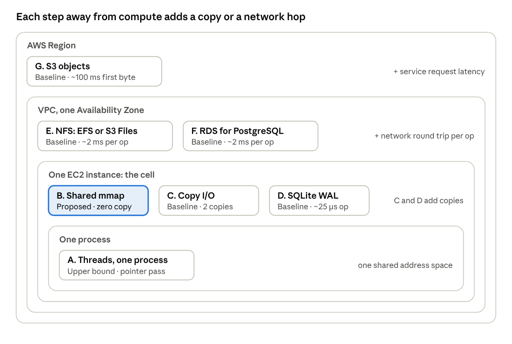
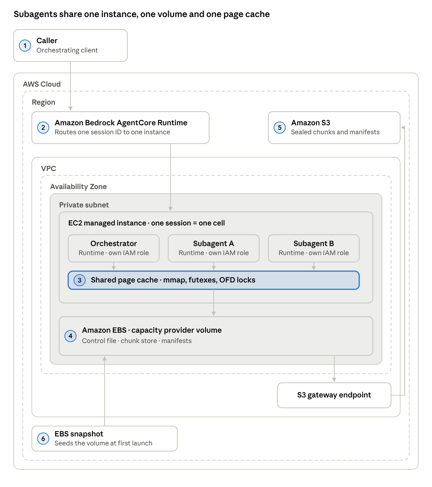
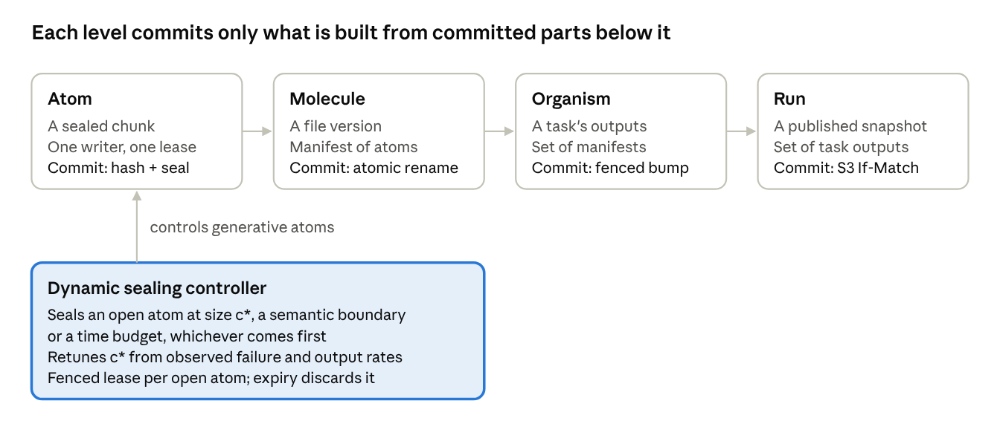
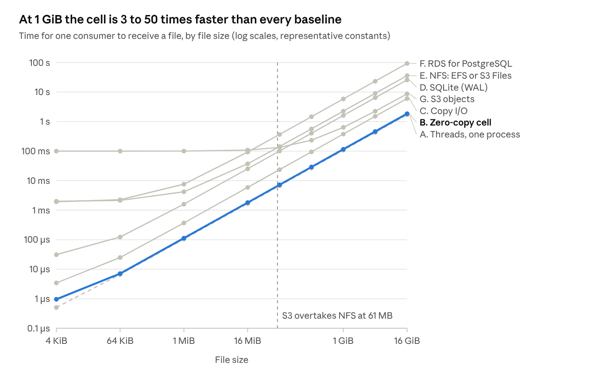
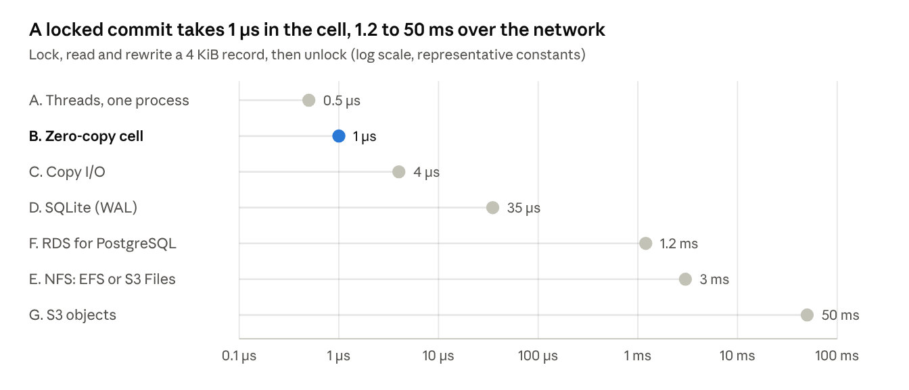
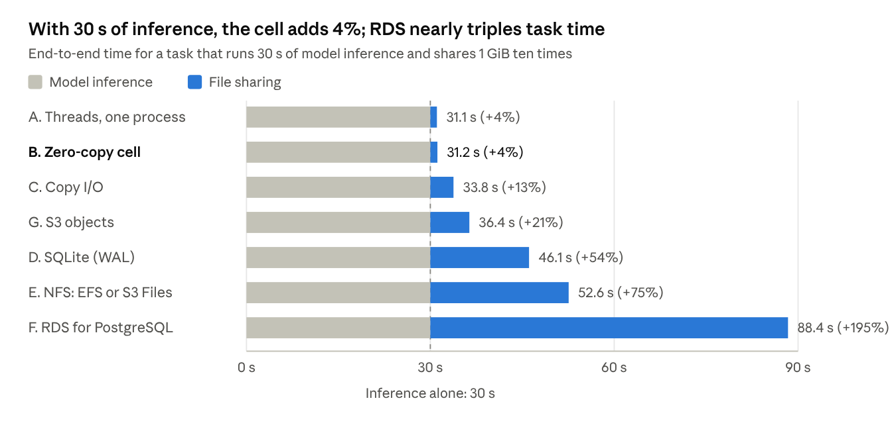
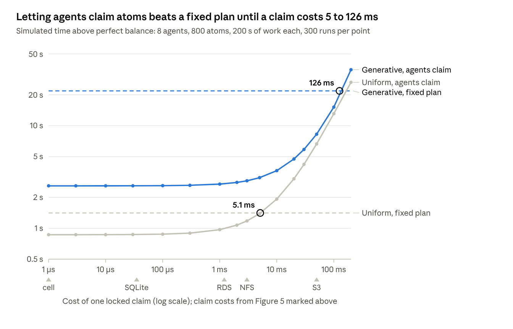

Executive overview
Subagents that share one copy of their data on one machine hand off a 1 GiB file 5.5 to 50 times faster than through any network store or database. The gap is wider for small files under complex business rules: a 1 MiB case file that passes through 100 rule steps spends 11 ms on storage in the cell and 15 s through S3.
Example 1, large files. An orchestrator fans a 1 GB data room out to subagents that extract clauses, check financials and flag risks; the data changes hands 10 times. With 30 s of model time, the job takes 31 s with shared memory in one AgentCore session, 34 s with plain files on the same session's volume, 36 s via S3, 53 s via EFS and 88 s via Postgres. When model time dominates like this, the storage choice moves the result by percentages, not multiples.
Example 2, small files with complex business rules. A lending or claims workflow applies 100 deterministic rules to a 1 MiB case file; each rule reads the latest version and advances the case with a locked commit. The case clears in 0.11 s in the cell, 0.14 s with plain files, 0.26 s with SQLite, 0.8 s via EFS, 1.0 s via Postgres and 15 s via S3, where storage is 99% of the time.
Recommendations.
Keep every subagent an AgentCore runtime with its own execution role and invocation audit trail. This is the one fixed requirement.
Co-locate only subagents that may read all of each other's data. Inside one session AWS provides no security boundary between agents, so the cell governs data per session, not per subagent.
Share data through memory inside the cell when steps are fast and many: deterministic rules, transforms and validation. When each step is a model call, the storage choice matters far less.
Commit work in whole units, so no reader ever sees partial output.
Use S3 to cross machines, persist results and audit data access per subagent; use databases for small records only.
Solution design
The solution has four layers, each with a single responsibility and a clear business outcome.
| Layer | What it does | Business value |
|---|---|---|
| Governance | Every subagent runs as an AgentCore runtime with its own role and audit trail | Each invocation and AWS call is attributed to its subagent; data inside a cell is governed per session |
| Execution cell | Mutually trusted subagents working on one task share one machine and one copy of the working data | Faster turnaround, with less memory and network traffic per task |
| Units of work | Output is handed over only in complete, verified units | No partial or inconsistent results; failed work is simply redone |
| Persistence | Finished units move to S3 under the producing subagent's own role; databases keep small records and references | Durable results, with a per-subagent record of who produced each one |
Who decides the units of work. Architects define the catalogue of units and the guardrails around them. Each agent's runtime code claims the next unit when it finishes, a mechanical claim rather than a model call; for generative work, the agent also decides where a unit ends. Agent-led claiming is the default inside a cell, where coordination is almost free; a fixed, pre-approved plan is reserved for uniform work coordinated through slower services, and for any choice that would need a model call. Appendix A sets out the evidence.
Caveat. Every figure comes from a model, not measurements, and the model leaves out costs the cell pays in practice: instance provisioning, EBS writeback and snapshot hydration, and hashing and fsync when units are sealed. Section 8 lists them and gives the benchmark. Co-located subagents must trust each other.
Abstract
Co-locating AgentCore subagents on one Instances session and sharing a memory-mapped volume moves a 1 GiB file in about 0.12 s, 5.5 to 50 times faster than any networked or database alternative under representative constants, and 3.3 times faster than copy-based I/O on the same volume. For small files the advantage comes from fixed latency, not bandwidth: a 1 MiB file that passes through 100 business-rule steps spends 11 ms on storage in the cell against 0.7 to 15 s through networked stores.
The paper makes one hard assumption: every subagent runs under AgentCore orchestration, because its governance layer is required. Everything else is optimised within that constraint. The cell keeps that layer for invocations and AWS calls, but inside a session AWS provides no security boundary between agents, so shared data is governed per session rather than per subagent.
Subagents on Amazon Bedrock AgentCore exchange files from a megabyte to many gigabytes and coordinate on them with locks. We propose a zero-copy cell: subagent runtimes invoked with one session ID land on one EC2 instance and share an EBS volume through the kernel page cache. Within the model, any cross-process share costs at least one cache-coherence transfer plus one pass over the bytes; the cell meets this bound for resident data read repeatedly, and stays within 8% of it for new data from 64 KiB up.
We compare the cell against five baselines: copy-based local I/O, SQLite in WAL mode, an NFS mount (EFS or S3 Files), Amazon RDS for PostgreSQL and S3 objects. The baselines rank differently by size: S3 overtakes NFS above about 61 MB and SQLite above about 100 MB. Databases are competitive only for small locked commits. All constants are representative, not measured; Section 8 gives the benchmark needed to replace them.
1. Introduction
Where a shared file lives relative to compute decides how fast subagents can hand it to each other, and the fixed latency alone spans six orders of magnitude, from 100 ns to 100 ms.
Multi-agent systems fan work out to subagents that produce intermediate artifacts: datasets, embeddings, code trees, model checkpoints, rendered media, and case files that move through many business-rule steps. Other subagents consume those artifacts, often concurrently, and some must update them under a lock. The default choice is whatever storage the team already runs: an object store, a shared filesystem or a database.
That default is rarely examined. A file in the consumer's own address space costs nothing to share. The same file behind a network round trip and a server process costs milliseconds before the first byte moves, and a per-client bandwidth cap after that.
This paper makes five contributions:
A taxonomy of sharing mechanisms ordered by distance from compute.
The zero-copy cell, a concrete design for AgentCore Runtime Instances.
A latency model with three propositions: a lower bound, an ordering under representative constants and closed-form crossover sizes.
An analysis of small files under many business-rule steps, where fixed latency rather than bandwidth decides the outcome.
A representative evaluation, a decision matrix and a benchmark protocol for replacing representative constants with measurements.
Scope: the one hard assumption
Every subagent must run as an AgentCore runtime, invoked through AgentCore, so that it sits inside AgentCore's governance layer. This is the paper's only hard assumption; the question is how to make file sharing fast without leaving that layer.
The assumption has three consequences for the design space:
Each subagent keeps its own identity for AgentCore and AWS. Each agent runs with IAM credentials from its own runtime's execution role, and CloudTrail records the principal and session ID of every invocation (security model). Inside a session that identity does not extend to shared data: AWS states that agents on one instance have no security boundary between them and that any code on the instance can read the credentials available to it. The cell therefore governs shared data per session, and Section 3 shows how to keep a per-subagent record of committed results.
Collapsing subagents into one process is out. Threads in one runtime (mechanism A) would also merge identities for AWS calls and invocation records, so A is kept only as a theoretical bound.
Placement follows AgentCore's rules. Co-location is available only on the Instances compute type, by sharing a session ID, and the session is the trust boundary.
Because each governed subagent is a separate process, Proposition 1's cross-process bound applies, and within the model the zero-copy cell is the fastest admissible design (Corollary 1).
2. Background: AgentCore storage and placement
AgentCore's Instances compute type is what makes the cell possible: runtimes invoked with the same session ID run on the same EC2 instance and can mount the same EBS volume.
AgentCore Runtime offers two compute types (AgentCore Instances):
| Property | microVMs | Instances |
|---|---|---|
| Agents per session | 1 | Many (1:N) |
| Maximum session | 8 hours | 14 days |
| Managed storage | Session storage, isolated per session | EBS capacity provider volumes |
| Shared storage | EFS or S3 Files access points (VPC) | Same volume mounted by co-located runtimes |
| GPUs | No | Supported families, shared by agents on the instance |
On Instances, invoking a second runtime that shares the capacity provider with the same runtimeSessionId launches it beside the first. If both runtimes list the same capacityProviderVolume, both mount it (file system configurations). Instances runtimes cannot mount EFS or S3 Files: specifying them alongside a capacity provider fails validation, so a cell reaches other cells through the S3 API.
Each session is its own EC2 instance. The first invocation with a new session ID provisions that instance, which takes far longer than starting a microVM, so a cell pays off when the session is kept and reused for many tasks, for up to 14 days.
On microVMs, sharing across sessions requires a bring-your-own mount. EFS offers full POSIX with advisory locking and close-to-open consistency over NFSv4.1. S3 Files mounts over NFSv4.2 with close-to-open consistency for NFS clients and eventual consistency for bucket-side access; a third-party test measured about 60 to 70 seconds before NFS writes appeared through the S3 API (S3 Files guide).
The trust boundary is the session. AWS states that neither containers nor processes on one instance provide a security boundary between agents, so only mutually trusted subagents may share a cell, and every agent in a cell can read all of the cell's data (security model).
3. The proposed design and the baselines
We propose two mechanisms and compare them against five baselines that teams commonly reach for; the baselines are not recommendations.

Each container a mechanism sits in adds a cost to everything inside it: a copy at the instance level, a network round trip in the VPC, a service request in the Region.
Proposed
A. Threads in one process. All subagents run as threads or coroutines in one agent runtime. Sharing a file is passing a pointer. A is the theoretical upper bound, but one process means one failure domain and one IAM identity, so it bypasses per-subagent governance and is not admissible under the paper's hard assumption.
B. Zero-copy cell. Each subagent is its own runtime on one capacity provider, invoked with one session ID, mounting one EBS volume. The volume holds three regions:
A control file every agent maps with MAP_SHARED, holding robust process-shared futexes, generation counters, leases with fencing tokens and an event ring buffer.
A chunk store of immutable, content-addressed chunks of 16 to 64 MiB. Readers map sealed chunks without locks. Writers filling a chunk take OFD byte-range locks, which the kernel releases if the holder dies. Because a chunk's ID is its content hash, the producer hashes every byte it seals (Section 4).
Manifests listing a file's chunks and generation, committed by atomic rename so readers always see a complete version. A manifest is durable only after fsync of the file and its directory; without fsync, a commit survives a process crash but not an instance crash.
Engineering risks. Robust futexes record the owner's thread ID. If runtimes run in containers with separate PID namespaces, thread IDs can collide across agents, so until robust futexes are shown to work on AgentCore the control file should use OFD locks, or futex locks whose word holds a lease token rather than a thread ID. A mapped read that hits an EBS I/O error or a truncated file raises SIGBUS and kills the agent, where read() would return an error, so sealed chunks are never truncated and agents handle SIGBUS. Under memory pressure, evicted pages turn mapped reads into faults to EBS. This paper specifies the cell; it does not yet implement it.
Baselines
C. Copy I/O, co-located. The same cell, but consumers read() bytes into private buffers. It isolates the cost of copying.
D. SQLite in WAL mode, co-located. Files stored as blobs of at most 64 MiB in a SQLite database on the shared volume; a single 1 GiB blob would exceed SQLite's default maximum length of 10⁹ bytes (SQLite limits). WAL needs shared memory, so all processes must be on one host and it does not work over a network filesystem (SQLite WAL). Containers on one host sharing a volume do satisfy this (Willison, 2026).
E. NFS mount. EFS or S3 Files mounted into microVM sessions in the same Availability Zone, with advisory locks over NFS.
F. Amazon RDS for PostgreSQL. Files stored as large objects in a same-AZ instance, with row locks for coordination. A bytea field is capped at 1 GB, below 1 GiB (PostgreSQL limits).
G. S3 objects. Producers PUT, consumers GET with parallel ranged requests, and manifests commit with conditional writes.
Reference architecture of the cell
The cell keeps every byte on one instance and touches the network only to seed the volume and to persist sealed results.

The caller invokes each subagent runtime with the same runtimeSessionId, which names the cell.
AgentCore Runtime launches every runtime that shares the capacity provider on the same managed EC2 instance, each with its own execution role.
Runtimes share bytes through the kernel page cache: mapped chunks, futexes in the control file and OFD byte-range locks.
The capacity provider volume holds the control file, chunk store and manifests, and survives session stops.
Sealed chunks and manifests spill asynchronously to S3 through a gateway endpoint, committed with conditional writes, so other cells can read them. Each subagent spills the units it produced under its own execution role, so S3 data events attribute every committed unit to its producer.
An EBS snapshot named in the capacity provider seeds the volume with reference data at first launch. Blocks of a volume restored from a snapshot download from S3 on first access, so first reads are slow unless the snapshot uses fast snapshot restore or a provisioned initialization rate (EBS initialization).
Official AWS Architecture Icons can replace the service boxes without changing the layout.
Atomic units of work
Every unit of work should commit all-or-nothing, on a boundary chosen on purpose and at a size chosen from the cost model.
We borrow the vocabulary of atomic design: atoms compose into molecules, molecules into organisms. Here each level is also atomic in the transactional sense, so a reader never sees part of a unit.

A crash at any level leaves the committed level below intact and the level above unchanged, provided commits are fsynced, so recovery is discarding what never committed.
Three rules.
Intentional boundaries. An atom ends at a semantic unit (a record, a shard, a function, a tool-call output) and preserves a stated invariant. A byte count caps an atom's size; it never defines where the atom ends, because a cut mid-record exposes half a fact.
Compose only committed parts. A manifest references only sealed atoms, and a task commit references only committed manifests.
Idempotent identity. An atom's ID is the hash of its content, so a deterministic retry produces the same atom and deduplicates. A non-deterministic retry produces a different hash, so manifests commit conditionally and the first commit wins; losing atoms are garbage-collected.
Sizing an atom. Small atoms pay a fixed seal cost λ_u many times; large atoms lose more work when a writer fails mid-atom. With producer rate β_p and failure rate φ per second of production, the expected overhead of producing S bytes in atoms of size c is
O(c) = \frac{S}{c}\,\lambda_u + \varphi \, \frac{S}{\beta_p} \cdot \frac{c}{2\beta_p}Setting dO/dc = 0 gives the optimal atom size, the same square-root form as Young's optimal checkpoint interval:
c^{*} = \beta_p \sqrt{\frac{2\lambda_u}{\varphi}}Worked example. With β_p = 100 MB/s, λ_u = 50 µs and one failure per hour (φ = 2.78 × 10⁻⁴ per second): c* = 100 MB/s × √(2 × 5 × 10⁻⁵ / 2.78 × 10⁻⁴) = 100 MB/s × √0.36 = 60 MB, so 64 MiB chunks. Ten times the failure rate shrinks c* by √10, to 19 MB. A 50 µs seal does not fsync; a durable seal pays at least one fsync to EBS, and at an assumed λ_u = 1 ms, c* grows to about 270 MB.
Generative atoms. When a subagent generates output with a model, an atom's size and boundary are not known in advance, so sizing must be controlled at run time rather than fixed. The controller in Figure 3 does four things:
Seals on the first of three triggers: size reaches c*, the generator emits a semantic boundary, or a time budget T_max elapses. Setting T_max = c* / β̂_p makes the size and time triggers agree in steady state, and bounds lost work to T_max of generation.
Makes boundaries intentional. The generator is constrained to structured output with explicit boundary markers, so semantic boundaries arrive more often than c*. If they don't, the controller falls back to the time budget and flags the unit for review.
Retunes online. It keeps moving averages φ̂ and β̂_p, recomputes c* from the formula above, and clamps it to a fixed range so it doesn't oscillate.
Never half-commits. Each open atom holds a lease with a fencing token and a heartbeat. If the lease expires, the atom is discarded. Sealing is a compare-and-set on the atom's token in the control file, under its lock, followed by the rename, so a stale writer's late seal fails the compare-and-set and its bytes are garbage-collected. A cap on open atoms per subagent keeps uncommitted bytes from crowding the page cache.
4. Cost model
Every mechanism is reduced to three numbers: a fixed latency, a per-byte cost to move the data, and a per-byte cost to read it that all mechanisms share. Cost here means time; the model prices nothing (Section 8).
Bulk workload. One producer shares a file of S bytes with N consumers, and each consumer reads every byte. The producer's own work to generate the bytes is common to all mechanisms and excluded. So is the unit-of-work protocol of Section 3, which every mechanism needs. It is not free: content hashing at an assumed 2 GB/s on one core adds about 0.5 s per GiB, more than the cell's own transfer cost, so hash in parallel or with a fast hash. We count only the cost of getting bytes from where they were produced to where they are read. For one consumer:
T_k(S) = \lambda_k + S\left(\frac{1}{\beta^{w}_k} + \frac{1}{\beta^{r}_k}\right) + \frac{S}{B_{mem}}Here λ_k is the fixed synchronization and setup latency, β^w_k and β^r_k are the effective write and read transfer bandwidths, and S / B_mem is the consumer touching the bytes in RAM. We write c_k = 1/β^w_k + 1/β^r_k for the per-byte transfer cost, so T_k(S) = λ_k + c_k S + S / B_mem.
Consumers that read only part of a file should be handed a reference (an S3 key or a path) and fetch only that part. Every mechanism's per-byte cost then shrinks and fixed latency dominates, which is the small-file regime below.
Small-op workload. One subagent takes a lock, reads and rewrites a 4 KiB record, and releases the lock. This models claiming a task or bumping a manifest generation.
Business-rule workload. A case file of S = 1 MiB passes through K rule steps. Each step reads the latest version and writes the next, which is one bulk share T_k(S), and advances the case with one small locked commit t_k, so a case spends K (T_k(S) + t_k) on storage. Evaluating the rules is common to all mechanisms and excluded.
Hardware constants (common to all). B_mem = 10 GB/s single-core read bandwidth; B_copy = 8 GB/s memcpy; fault-around window F = 64 KiB; minor fault t_f = 0.5 µs; syscall t_sys = 1 µs; read buffer b = 1 MiB. GB means 10^9 bytes.
| Mechanism | Role | λ (fixed latency) | Write β | Read β | c (s per GB) |
|---|---|---|---|---|---|
| A. Threads in one process | Proposed (upper bound) | 100 ns | none | none | 0 |
| B. Zero-copy cell (shared mmap) | Proposed | 100 ns + ⌈S/F⌉ t_f / R | none | none | 0 |
| C. Copy I/O, co-located | Baseline | 2 t_sys ⌈S/b⌉ | 8 GB/s | 8 GB/s | 0.25 |
| D. SQLite (WAL), co-located | Baseline | 25 µs | 1.0 GB/s | 2.5 GB/s | 1.4 |
| E. NFS: EFS or S3 Files | Baseline | 2.0 ms | 1.0 GB/s | 1.0 GB/s | 2.0 |
| F. RDS for PostgreSQL | Baseline | 1.9 ms | 0.3 GB/s | 0.5 GB/s | 5.33 |
| G. S3 objects, parallel ranged | Baseline | 100 ms | 5 GB/s | 5 GB/s | 0.4 |
R is the number of times the same mapped bytes are read. New data always has R = 1, because sealed chunks are immutable and each new chunk is a new mapping. The cell's 100 ns is the same ready signal as A's. Every constant is an order-of-magnitude assumption for current x86 or Graviton instances in one Availability Zone, chosen to be fair to each baseline. None is a measurement. Where a public measurement exists, the constant is at least as generous to the baseline: a third-party test of S3 Files measured about 0.34 GB/s for writes and 0.29 GB/s for uncached reads, against 1.0 GB/s assumed here.
5. Theoretical results
Within the model, the cell is within a page-fault cost of the fastest possible cross-process share, and copy I/O on the same host beats every other baseline. These are properties of the model and its constants, not of hardware; Section 8 says how to test them.
Proposition 1 (lower bound)
In the model, any scheme in which a single-threaded consumer in a different thread or process from the producer reads all S bytes takes at least
T \geq t_c + \frac{S}{B_{mem}}where t_c is the minimum inter-core cache-coherence latency.
Proof. The consumer must touch all S bytes, which costs at least S / B_mem. It must also learn the bytes are ready, which means observing a write made on another core; that costs at least one coherence transfer, t_c. The consumer cannot safely read before the signal arrives, so the two costs are sequential. ∎
This restates the model's assumption that touching a byte costs 1 / B_mem. A consumer that reads with several cores lowers the bound in proportion.
Corollary 1. Mechanism A attains t_c + S / B_mem and is optimal within the model. Mechanism B adds a mapping cost amortized over R reads of the same mapped bytes:
T_B(S) - T_A(S) = \frac{\lceil S/F \rceil \, t_f}{R} \;\xrightarrow{R \to \infty}\; 0So B approaches the bound for resident data read repeatedly, such as reference data seeded into the volume. New data always has R = 1: for S = 1 GiB the mapping cost is 16,384 × 0.5 µs = 8.2 ms, 7.6% above A. It falls to 0.08 ms only for bytes already mapped and read 100 times.
Proposition 2 (ordering under the model's constants)
Under Section 4's constants, for every S ≥ 0: T_A ≤ T_B ≤ T_C, and T_C ≤ T_k for every k in {D, E, F, G}.
Proof. Compare terms; every mechanism shares S / B_mem. A's 100 ns is no more than B's 100 ns plus faults. B's fault cost, 0.5 µs per 64 KiB (about 8 µs per MiB), is below C's cost of 2 µs plus 262 µs of copying per MiB. C's fixed cost of 2 µs per MiB read is below every other mechanism's fixed latency at small sizes, and its per-byte cost of 0.25 s per GB is below D's 1.4, E's 2.0, F's 5.33 and G's 0.4, so each inequality holds at every size. ∎
Why this is not a hardware result. Mapping a file has costs that read() does not: minor faults and page-table setup in each reader, and TLB shootdowns across cores when a mapping is removed. Sequential scans with read() often match or beat mmap (Crotty et al., 2022). Whether B beats C on AgentCore, and by how much, must be measured.
Proposition 2 is a partial order. It does not rank D, E, F and G against each other.
Proposition 3 (crossover size)
For two baselines a and b with λ_a < λ_b and c_a > c_b, a is faster below and b faster above
S^{*}_{a,b} = \frac{\lambda_b - \lambda_a}{c_a - c_b}Proof. T_a(S) − T_b(S) = (λ_a − λ_b) + (c_a − c_b) S, since the S / B_mem terms cancel. This is linear in S with a negative intercept and positive slope, so it has exactly one root, at S*. ∎
If λ_a ≤ λ_b and c_a ≤ c_b, a dominates b at every size. Under Section 4's constants, SQLite dominates both NFS and RDS, and NFS dominates RDS above about 30 KB. The crossovers against S3 are worked in Section 6.
6. Representative evaluation
Under Section 4's constants, the cell moves 1 GiB in 0.116 s: within 8% of the one-process bound, and 3.3 to 50 times faster than every baseline.

From 64 KiB up, the cell's line sits within 8% of the one-process bound; at 4 KiB the fault and signal cost about doubles it. Copy I/O is the fastest baseline at every size. Among the database and networked baselines, S3 is slowest for small files and overtakes NFS above 61 MB and SQLite above 100 MB; RDS for PostgreSQL is slowest for large files.
Worked calculation at 1 GiB
S = 1 GiB = 1.074 GB, so the common read term is S / B_mem = 1.074 GB ÷ 10 GB/s = 0.107 s. Each row applies T = λ + c × S + S / B_mem with c in seconds per GB.
| Mechanism | λ | c × S | S / B_mem | T(1 GiB) | Slower than cell |
|---|---|---|---|---|---|
| A. Threads, one process | 100 ns | 0 | 0.107 s | 0.107 s | 0.93× |
| B. Zero-copy cell | 8.2 ms (16,384 faults × 0.5 µs) | 0 | 0.107 s | 0.116 s | 1.0× |
| C. Copy I/O | 2.0 ms (1,024 reads × 2 × 1 µs) | 0.25 × 1.074 = 0.268 s | 0.107 s | 0.378 s | 3.3× |
| G. S3 objects | 100 ms | 0.4 × 1.074 = 0.430 s | 0.107 s | 0.637 s | 5.5× |
| D. SQLite (WAL) | 25 µs | 1.4 × 1.074 = 1.503 s | 0.107 s | 1.611 s | 13.9× |
| E. NFS: EFS or S3 Files | 2.0 ms | 2.0 × 1.074 = 2.147 s | 0.107 s | 2.257 s | 19.5× |
| F. RDS for PostgreSQL | 1.9 ms | 5.33 × 1.074 = 5.727 s | 0.107 s | 5.836 s | 50.5× |
Crossovers between baselines
Proposition 3 gives each crossover as S* = (λ_b − λ_a) / (c_a − c_b), with λ in seconds and c in seconds per GB, so S* comes out in GB:
\begin{aligned}
S^{*}_{E,G} &= \frac{0.100 - 0.002}{2.0 - 0.4} = 0.061\ \text{GB} \approx 61\ \text{MB} \\
S^{*}_{D,G} &= \frac{0.100 - 0.000025}{1.4 - 0.4} = 0.100\ \text{GB} \approx 100\ \text{MB} \\
S^{*}_{F,G} &= \frac{0.100 - 0.0019}{5.33 - 0.4} = 0.020\ \text{GB} \approx 20\ \text{MB} \\
S^{*}_{F,E} &= \frac{0.0020 - 0.0019}{5.33 - 2.0} = 0.00003\ \text{GB} \approx 30\ \text{KB}
\end{aligned}Below each crossover the first-named mechanism wins; above it, the second. So RDS beats NFS only for records under about 30 KB, and S3 beats every database and networked baseline above 100 MB. Copy I/O on the same host stays faster than S3 at every size.
Ranking by workload
| Mechanism | 1 MiB file | 1 GiB file | Small locked commit | Copies held when N consumers load the whole file |
|---|---|---|---|---|
| A. Threads, one process | 1 | 1 | 1 | S |
| B. Zero-copy cell | 2 | 2 | 2 | S |
| C. Copy I/O | 3 | 3 | 3 | N × S |
| D. SQLite (WAL) | 4 | 5 | 4 | N × S |
| E. NFS: EFS or S3 Files | 5 | 6 | 6 | N × S |
| F. RDS for PostgreSQL | 6 | 7 | 5 | N × S |
| G. S3 objects | 7 | 4 | 7 | N × S |
Only A and B keep one copy of the data however many consumers load it. With 8 consumers that each load a 1 GiB file, every baseline holds 8 GiB where the cell holds 1 GiB. Consumers that stream through a buffer hold only the buffer in any mechanism, so this advantage applies to consumers that need the whole file at once.

The small commit is a futex and a 4 KiB copy in the cell; OFD-lock syscalls with pread and pwrite for C; a WAL append without fsync for D; one round trip plus a server-side fsync for F; three NFS round trips (lock, write, unlock) for E; and a conditional PUT for G. The mechanisms differ in durability: F's and G's commits survive an instance crash once acknowledged, while the cell's 1 µs and D's WAL append include no fsync.
Small files under complex business rules
The cell's advantage does not need large files. At 1 MiB the per-byte terms are small, so each mechanism's fixed latency decides the outcome, and a workflow with many rule steps pays that latency at every step.
Workload. A 1 MiB case file, such as a loan application, an insurance claim or a trade confirmation with its extracted data, passes through 100 business-rule steps: validation, enrichment, eligibility, pricing, compliance checks and approvals. Each step reads the latest version, writes the next and advances the case with one locked commit (Section 4's business-rule workload with K = 100).
| Mechanism | Per step (share + commit) | Slower than cell | Storage per case | Case time, 1 ms rules | Storage share | Case time, 2 s model-evaluated rules |
|---|---|---|---|---|---|---|
| B. Zero-copy cell | 0.114 ms | 1.0× | 0.011 s | 0.11 s | 10% | 200.0 s |
| C. Copy I/O | 0.373 ms | 3.3× | 0.037 s | 0.14 s | 27% | 200.0 s |
| D. SQLite (WAL) | 1.63 ms | 14× | 0.16 s | 0.26 s | 62% | 200.2 s |
| E. NFS: EFS or S3 Files | 7.20 ms | 63× | 0.72 s | 0.82 s | 88% | 200.7 s |
| F. RDS for PostgreSQL | 8.80 ms | 77× | 0.88 s | 0.98 s | 90% | 200.9 s |
| G. S3 objects | 150.5 ms | 1,320× | 15.1 s | 15.2 s | 99% | 215.1 s |
Worked line for S3. One step shares 1 MiB, 100 ms + 0.4 s/GB × 0.00105 GB + 0.105 ms = 100.5 ms, and advances the case with a 50 ms conditional PUT, for 150.5 ms. One hundred steps spend 15.1 s on storage against 0.1 s of rule evaluation.
Three things follow.
Deterministic rules make storage the bottleneck. With 1 ms per rule, storage is 10% of case time in the cell, 62% with SQLite, about 90% over EFS or RDS and 99% over S3. This is where the cell's advantage is largest: 63 to 1,320 times per step against networked stores, against 5.5 to 50 times for a 1 GiB file.
Model-evaluated rules hide it. If each rule is a 2 s model call, storage is under 1% of case time for every mechanism except S3, which reaches 7%. Section 7's Amdahl bound applies: put deterministic rules in the cell, and don't expect it to speed up rules that are model calls.
Latency is not throughput. Processing many cases at once hides per-step latency, so S3 can match the cell's throughput with enough cases in flight. The cell's advantage is per-case turnaround, and it avoids about 300 S3 requests per case.
The constants are still assumptions. S3 Express One Zone advertises single-digit-millisecond request latency; at λ_G = 10 ms and a 5 ms commit, the S3 case falls to about 1.5 s of storage, still more than a hundred times the cell.
7. Discussion and decision matrix
Use the cell when subagents trust each other and either share large data or run many fast steps on small data; S3 to cross cells and to audit data access per subagent; and databases for metadata rather than bytes.
When storage choice matters
If file sharing is a fraction f of a task's end-to-end time, no storage design can speed the task up by more than
\text{speedup} \leq \frac{1}{1 - f}The storage result matters only where f is large: chains of deterministic rules, where f reaches 99% over S3 in Section 6, rather than tasks dominated by model calls. Real deployments should measure f.

With 30 s of inference, the cell keeps sharing near 4% of task time and plain files on the same volume near 13%; S3 adds 21%, and RDS nearly triples the task. Here the cell's control file, leases and fencing buy about 8% over plain files; its larger wins are against networked stores and in the small-file, many-step regime. The 30 s and ten shares are assumptions; replace them with measured values.
Decision matrix
Each mechanism is scored 1 (worst) to 5 (best) per criterion, and the weighted score is
\text{Score}_k = \sum_i w_i \, s_{k,i}, \qquad \sum_i w_i = 1The weights below fit trusted subagents sharing large files. Speed scores follow the rankings in Section 6; the rest are qualitative. Isolation follows AWS's statement that agents in one session have no security boundary between them: co-located mechanisms score 2 (separate processes and roles for AWS calls) and one process scores 1. The cell's operational simplicity scores 2, for its custom control file, leases and fencing.
| Mechanism | Large files (w 0.35) | Small commits (w 0.20) | Crosses hosts (w 0.15) | Isolation (w 0.10) | Durability (w 0.10) | Ops simplicity (w 0.10) | Weighted score | Choose when |
|---|---|---|---|---|---|---|---|---|
| B. Zero-copy cell | 5 | 5 | 1 | 2 | 3 | 2 | 3.60 | Trusted subagents share large data, or run many fast steps, in one session |
| A. Threads, one process | 5 | 5 | 1 | 1 | 1 | 5 | 3.60 | Not admissible: bypasses per-subagent governance; a bound only |
| G. S3 objects | 3 | 1 | 5 | 5 | 5 | 5 | 3.50 | Handing results between cells, persisting them, or auditing access per subagent |
| C. Copy I/O | 4 | 4 | 1 | 2 | 3 | 4 | 3.25 | Plain files on the cell's volume; the simple first step before the cell |
| E. NFS: EFS or S3 Files | 2 | 2 | 4 | 5 | 4 | 3 | 2.90 | Isolated microVMs share mid-size files in one AZ |
| F. RDS for PostgreSQL | 1 | 3 | 4 | 5 | 4 | 2 | 2.65 | Task state already lives in Postgres; store S3 keys, not bytes |
| D. SQLite (WAL) | 2 | 4 | 1 | 2 | 3 | 4 | 2.55 | A queryable catalogue of chunks inside one cell |
Worked line. Score_B = 0.35 × 5 + 0.20 × 5 + 0.15 × 1 + 0.10 × 2 + 0.10 × 3 + 0.10 × 2 = 1.75 + 1.00 + 0.15 + 0.20 + 0.30 + 0.20 = 3.60.
B leads S3 by only 0.10, so the qualitative scores decide this ranking: score B's isolation 1 and it ties S3. Treat the matrix as a structured judgement, not a result.
Sensitivity. For fan-out across many instances, move weight from large files to crossing hosts (0.10 and 0.40). Then Score_G = 0.30 + 0.20 + 2.00 + 0.50 + 0.50 + 0.50 = 4.00 and Score_B = 0.50 + 1.00 + 0.40 + 0.20 + 0.30 + 0.20 = 2.60, so S3 wins. For many-step rule workflows on small files, move weight from large files to small commits (0.15 and 0.40). Then Score_B = 0.75 + 2.00 + 0.15 + 0.20 + 0.30 + 0.20 = 3.60 and Score_G = 0.45 + 0.40 + 0.75 + 0.50 + 0.50 + 0.50 = 3.10, so the cell's lead over S3 grows from 0.10 to 0.50.
Recommended composition
Inside a cell: the zero-copy cell for bytes, with the control file (or SQLite on the shared volume) as the catalogue, and the atomic units of Section 3. Start with plain files on the shared volume (C) and add the cell's machinery where measurements show it pays.
Business-rule chains: run deterministic rule steps as subagents in one long-lived cell, each advancing the case with a locked commit in the control file, and spill the finished case to S3.
Across cells: S3 objects with conditional manifest commits, each subagent writing under its own role so S3 data events record what it produced; a sealed atom crosses the network once.
Databases: RDS for PostgreSQL only for relational task state that other systems query, holding S3 keys rather than file bytes.
Isolation first: an NFS mount when subagents must not share an instance, accepting a 2 ms floor per operation.
Related work
The cell's chunk store follows shared-memory object stores such as Plasma and the Ray object store (Moritz et al., 2018): immutable, sealed objects shared by co-located workers and spilled to remote storage. Content-addressed chunks with manifests and atomic commits follow Git and backup tools such as restic. Crotty et al. (2022) explain why mmap is a poor default for database buffer management, which bears on Proposition 2. Guided self-scheduling (Polychronopoulos and Kuck, 1987) and work stealing (Blumofe and Leiserson, 1999) established long before this paper that dynamic assignment absorbs variable task times, the result Appendix A applies to subagents.
8. Threats to validity and benchmark protocol
Propositions 1 and 3 hold for any constants of the model's form; Proposition 2 and every number in Sections 6 and 7 depend on the constants. Treat them as hypotheses until the protocol below has been run.
Threats.
Representative constants. Every λ and β in Section 4 is an assumption. EBS, EFS and S3 limits change, and they vary by instance size and Region.
Warm caches. The model assumes bytes are in the page cache. A cold cell reads from EBS first, adding S / β_EBS to mechanisms A to D.
Client caching. NFS clients cache data and attributes, so repeat reads on E can beat the model while first reads match it.
Contention. The model has one writer. With many writers, SQLite serializes on one WAL writer, RDS on row locks, and S3 on per-prefix request rates.
Database tuning. SQLite synchronous mode, page size and mmap_size, and RDS instance class and storage type, can each move D and F by several times.
Instance provisioning. Each new session provisions an EC2 instance before its first invocation. The cell pays this once per session, so it suits sessions kept for many tasks; the model leaves it out, while microVMs start fast.
Snapshot hydration. A volume seeded from a snapshot downloads blocks from S3 on first access, with higher latency until it is initialized (EBS initialization).
Writeback. The cell's pages are backed by EBS. Dirty pages are written back at the volume's throughput (gp3 has a 125 MiB/s baseline, up to 2,000 MiB/s provisioned; EBS gp3), and producers are throttled once the kernel's dirty-page limits are reached. Sustained production above that rate is bounded by EBS, not memory.
Durability and hashing. A 50 µs seal without fsync survives a process crash but not an instance crash; a durable seal costs an fsync. Content hashing is a per-byte producer cost the model excludes from every mechanism.
mmap versus read(). Mapping has costs read() does not (Proposition 2's note).
Workload realism. Consumers are assumed to read every byte, and every rule step to read the whole case. Passing references and reading only what is needed shrinks the per-byte terms in every mechanism.
Governance. The cell governs shared data per session. Where policy needs per-subagent authorization of each read, use S3, or NFS with per-runtime access points, and accept their latency.
Prices. Cost means time; the model prices nothing. Instances bill EC2 hours in your account for as long as a session runs, plus any provisioned EBS throughput; microVMs bill by consumption; and S3 bills per request, about 300 per case in Section 6's rule workflow.
Protocol. Run each test on the AgentCore instance types you deploy, with all resources in one Availability Zone.
Hardware constants: a futex and OFD-lock microbenchmark for t_c and lock cost; a memcpy test for B_mem and B_copy; page-fault timing for t_f.
Volume: fio sequential and random reads and writes on the capacity provider volume, cold and warm.
Each mechanism: the bulk workload at 4 KiB to 16 GiB in powers of four, and the small-op workload, with N = 1, 4 and 16 consumers, on new data (R = 1) as well as repeated reads.
Business-rule workload: 1 MiB case files through 10, 100 and 1,000 steps, with measured rule-evaluation time; report the storage share f and requests per case.
Cell overheads: session provisioning time, snapshot hydration, writeback under sustained writes, and seal cost with and without fsync and hashing.
Comparison points: plain files on the shared volume (C) and a shared-memory object store such as Ray's.
Statistics: at least 30 runs per point; report median and p99 with 95% bootstrap intervals.
Fit λ_k and c_k per mechanism by least squares on T_k(S), then recompute the crossovers from Proposition 3 and report fitted against assumed values.
Publish the harness, raw results and instance metadata so the numbers can be reproduced.
9. Conclusion
Given that every subagent must run under AgentCore governance, put mutually trusted subagents in one cell, share bytes through the page cache, and reach for networked storage to cross cells, persist results or audit data access per subagent. The cell matters most where steps are fast and many: deterministic business rules on files as small as 1 MiB, where networked stores turn a 0.1 s case into seconds.
Within the model, the cell stays within 8% of the cross-process lower bound for new data from 64 KiB up, and copy I/O on the same host beats every other baseline. Among the database and networked baselines no single winner exists: S3 wins large transfers, SQLite wins small commits on one host, and RDS for PostgreSQL wins neither under these constants. The open question is empirical: the benchmark in Section 8 will fix the constants, and Proposition 3 will then give each deployment its own crossover sizes.
References
Amazon Web Services. File system configurations for AgentCore Runtime. Accessed 30 October 2026.
Amazon Web Services. Instances, Amazon Bedrock AgentCore. Accessed 30 October 2026.
Amazon Web Services. Security model and permissions for Runtime Instances. Accessed 30 October 2026.
Amazon Web Services. AgentCore Runtime supports bring-your-own file system from S3 Files and EFS. 6 May 2026.
Amazon Web Services. AgentCore Runtime managed session storage (preview). 25 March 2026.
ComputingForGeeks. Amazon S3 Files: setup, performance and pricing. 2026.
SQLite. Write-Ahead Logging (mirror of sqlite.org/wal.html).
S. Willison. SQLite WAL mode across Docker containers sharing a volume. 7 April 2026.
R. L. Graham. Bounds on multiprocessing timing anomalies. SIAM Journal on Applied Mathematics, 17(2), 1969.
R. D. Blumofe and C. E. Leiserson. Scheduling multithreaded computations by work stealing. Journal of the ACM, 46(5), 1999.
J. W. Young. A first order approximation to the optimum checkpoint interval. Communications of the ACM, 17(9), 1974.
Amazon Web Services. Initialize Amazon EBS volumes. Accessed 30 October 2026.
Amazon Web Services. Amazon EBS General Purpose SSD volumes. Accessed 30 October 2026.
Amazon Web Services. Amazon S3 Express One Zone. Accessed 30 October 2026.
SQLite. Limits in SQLite.
PostgreSQL. PostgreSQL limits.
A. Crotty, V. Leis and A. Pavlo. Are you sure you want to use MMAP in your database management system? CIDR, 2022.
P. Moritz et al. Ray: a distributed framework for emerging AI applications. OSDI, 2018.
C. D. Polychronopoulos and D. J. Kuck. Guided self-scheduling: a practical scheduling scheme for parallel supercomputers. IEEE Transactions on Computers, C-36(12), 1987.
Appendix A. Designer-chosen versus agent-chosen atoms
Inside a cell, agents should claim the next atom themselves, as a mechanical claim in their runtime code: in simulation, self-scheduling cuts load-imbalance overhead for generative work from 21.8 s to 2.6 s, and a fixed plan wins only once each claim costs more than 5 to 126 ms. A claim that waits on a model call costs about a second, so the choice of the next atom must not wait on the model.
A.1 Two separate decisions
Choosing atoms involves two decisions that are often conflated:
Definition: what an atom is, meaning its boundary type, the invariant it preserves and its size envelope.
Assignment: which agent works on which atom, and when.
Either can be fixed by the designer before the run (static) or made by agents during it (dynamic). Section 3's rules govern definition. This appendix gives the evidence for assignment first, then returns to definition.
A.2 Static assignment: the designer's plan
The orchestrator splits k atoms evenly across n agents before the run. If atom durations have mean μ and standard deviation σ, each agent's load is a sum of m = k / n durations, and the run ends when the slowest agent finishes. A normal approximation to the maximum of n such sums gives the expected overhead above perfect balance:
\mathbb{E}[T_{\text{static}}] - \frac{W}{n} \approx \sigma \sqrt{m} \, \sqrt{2 \ln n}The overhead grows with the variability of the work and with the square root of the atoms per agent. Model calls make variability high, because output length and endpoint latency vary from call to call.
A.3 Dynamic assignment: agents claim atoms
Each agent claims the next unclaimed atom when it finishes, through a locked claim costing δ. Graham's list-scheduling bound caps the imbalance at roughly one atom, and the claims add their own cost:
T_{\text{dynamic}} \leq \frac{W}{n} + \left(1 - \frac{1}{n}\right) t_{\max} + \frac{k}{n}\,\delta \qquad (k\delta \ll W/n)The imbalance term no longer grows with m, but the claim term does. Dynamic assignment therefore wins whenever claims are cheap relative to the variability they absorb. The cell makes claims cheap: one claim is one locked commit in the control file, about 1 µs in Figure 5.
This assumes the claim is code that takes the next atom from a catalogue. If an agent asks its model which atom to take, δ is a model call of about a second, and the claim term alone is (k / n) δ = 100 × 1 s = 100 s per agent in the simulated setup, far above the 21.8 s a fixed plan loses to imbalance.
A.4 Simulation
We simulated both policies with n = 8 agents and k = 800 atoms of mean 2 s, so 200 s of work per agent. Durations were lognormal with a coefficient of variation of 0.75 (generative work, such as model calls) or 0.05 (uniform work, such as deterministic transforms). Claims were serialized through one lock, and each point is the mean of 300 runs.

For generative work, a fixed plan leaves 21.8 s of imbalance against 2.6 s for claiming in a cell. For uniform work the figures are 1.41 s and 0.87 s. The normal approximation in A.2 overestimates the static overhead (30.6 s and 2.0 s), as expected of an approximation to a maximum.
Mapping the crossovers onto the claim costs of Figure 5 gives the verdict for each mechanism:
| Claim mechanism | Claim cost | Uniform work | Generative work |
|---|---|---|---|
| Cell control file | 1 µs | Agents claim | Agents claim |
| SQLite on the shared volume | 35 µs | Agents claim | Agents claim |
| RDS for PostgreSQL | 1.2 ms | Agents claim | Agents claim |
| NFS lock | 3 ms | Agents claim | Agents claim |
| S3 conditional write | 50 ms | Fixed plan | Agents claim |
A.5 Agent-chosen boundaries
For generative work, the agent also decides where each atom ends. Adding claim cost and imbalance to Section 3's seal-versus-rework trade-off gives a per-agent overhead in time units, where τ is an atom's duration:
O(\tau) = \frac{W}{n\tau}\left(\lambda_u + \delta\right) + \tau + \varphi \, \frac{W}{n} \cdot \frac{\tau}{2}The three terms are fixed costs per atom, imbalance of about one atom, and expected rework. Minimizing gives
\tau^{*} = \sqrt{\frac{(W/n)\,(\lambda_u + \delta)}{1 + \varphi W / (2n)}}Worked values. With W / n = 200 s, λ_u = 50 µs and one failure per hour (so φW / 2n = 0.028), τ* is 0.10 s in a cell (δ = 1 µs), 0.77 s over NFS (δ = 3 ms) and 3.1 s over S3 (δ = 50 ms). In a cell, atoms can end at fine semantic boundaries chosen by the agent; over the network they must be seconds long, which favours coarse atoms fixed by the designer.
Model calls change the answer. If each atom is a model call with a fixed cost λ_m for prompt processing and time to first token, λ_m joins λ_u + δ in the formula. At λ_m = 0.5 s, τ* is 9.9 s in a cell, 9.9 s over NFS and 10.4 s over S3: the storage mechanism barely matters, because the model call dominates. Fine, agent-chosen boundaries pay off for deterministic atoms such as rule steps, where λ_m = 0.
A.6 A division of responsibility
The evidence supports three regimes:
| Regime | Who defines atoms | Who assigns atoms | Use when |
|---|---|---|---|
| Catalogue and claim (default) | Designer | Agents | Most work inside a cell |
| Envelope and claim | Agents, within a designer-set envelope | Agents | Generative work whose boundaries emerge during the run |
| Fixed plan | Designer | Designer | Uniform work with claims over about 5 ms, or a plan that must be approved before the run |
In every regime the designer owns the invariant each atom preserves, the allowed boundary types, the size envelope [τ_min, τ_max] and which agents may claim. Agents own only the run-time choices inside those limits: which atom next, and where to cut within the envelope. This is what makes dynamic choice intentional rather than improvised.
The control file records each claim and seal with a fencing token and the claiming runtime's identity, but every agent in the cell can write that file, so it is an operational log, not an audit control. For audit-grade attribution, each subagent spills the units it sealed to S3 under its own execution role, so S3 data events record who produced what, and the orchestrator, outside the cell, records which runtime it invoked for each task.
A.7 Limits of the evidence
The simulation assumes independent durations, a single lock, no failures and claims made by code rather than by model calls. Heavy-tailed durations would favour dynamic assignment further, while a correlated slowdown, such as a throttled model endpoint, hurts both policies alike. The next step is to replay measured atom durations from real subagents through the same simulation, following the protocol in Section 8.